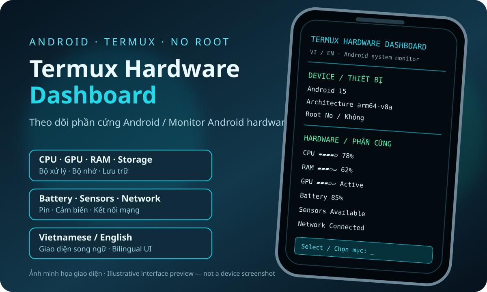

Thiết bị
Tổng quan Android, model, kernel và thời gian hoạt động.
ANDROID · TERMUX · KHÔNG CẦN ROOT
Xem CPU, GPU, RAM, pin, bộ nhớ, màn hình, cảm biến và mạng ngay trong Termux.
pkg install curl && curl -fsSL https://raw.githubusercontent.com/khahdihdz/termux-hardware-dashboard/main/install.sh | bash
Tổng quan Android, model, kernel và thời gian hoạt động.
CPU, GPU, RAM, dung lượng lưu trữ và pin.
Đọc giao diện cảm biến hệ thống công khai và thông tin mạng.
Tiếng Việt và English.
Cần root không? Không. Android có thể giới hạn một số thông số.